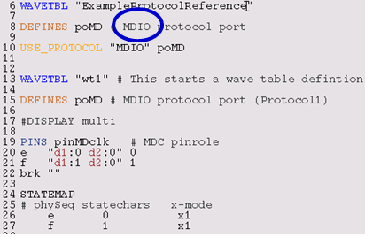

Predefined protocols may exist in libraries or in other test programs. You can leverage
from them instead of creating new protocols from scratch.
About this task
This task is about using a predefined protocol in your testflow.
Before you begin
Ensure you have the available license. The pins used in the protocol need to be defined
in a dedicated port. Protocol Aware requires the use of STATEMAP in the wavetable. The state map
section in the wavetable allows to uniquely map a transaction to a sequence of physical
waveforms respectively interpreting a waveform sequence as transaction words.
Procedure
-
Start smartest and Load your device. Verify that the pin configuration contains the port to
be used in the protocol. In the following illustration, the pins p01 and p02 are port member of
the port Po01 as shown in the next picture. They will be mapped to the protocol.
-
Import an existing protocol definition. Select the Protocols icon in
the Test Program explorer and right-click to select the import action. Navigate with the
browser to the existing protocol definition directory and select next. The files will then be
imported to the local device protocols directory (device/protocols) and the protocol loaded
into the SmarTest setup.
-
Protocol assignment. From the Test Program Explorer, right-click and select
Protocol Assignments. You will use this tool to map protocol pin role
to device port used in the protocol. This is illustrated in the following picture.
-
Save your pin configuration file after the protocol assignment.
-
The wavetable for the protocol pins are defined within the imported protocol. Now you need
to modify the wavetable of your device and add the protocol port. This is illustrated in the
following picture.

-
The timing equations for the protocol pins are defined within the imported protocol. Now
you need to modify the equation setup of the device and add the protocol port. This is
illustrated in the following picture. See also Editing protocol specific timing.
-
The level equations for the protocol pins are defined within the imported protocol. Now you
need to modify the equation setup of the device and add the protocol port. This is illustrated
in the following picture. See also Editing protocol specific levels.
-
Create the protocol wrapper according to Generating protocol wrappers.
-
Copy the generated .cpp and .hpp files to you UTM project directory.
-
Add an include statement to your test method class #include <wrapperClass>.hpp. The
following picture illustrates a user created wrapper for an MDIO protocol.
Results
You have re-used an existing protocol within a device setup.
What to do next
Load device including the protocol and verify your setup.